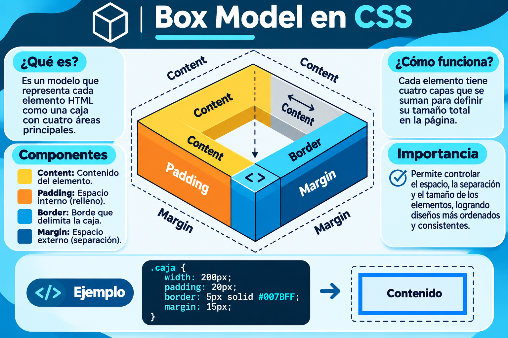

Modelo de caja (Box Model) en CSS
¿Qué es?
El Box Model o modelo de caja es un concepto de CSS que explica cómo se organiza y ocupa el espacio de cada elemento HTML en una página web. Cada elemento se representa como una caja formada por diferentes capas que determinan su tamaño y separación.
¿Para qué sirve?
Sirve para controlar el tamaño de los elementos, establecer espacios internos y externos, agregar bordes y organizar correctamente los componentes de una página web. Permite tener un mayor control sobre la distribución y apariencia del contenido.
¿Cómo funciona?
El modelo de caja funciona mediante cuatro componentes principales: contenido (Content), relleno interno (Padding), borde (Border) y margen externo (Margin). Cada uno cumple una función diferente y se organiza alrededor del contenido del elemento.
Componentes del Box Model
Los cuatro componentes del modelo de caja trabajan juntos para definir el espacio que ocupa un elemento en una página web. El contenido se encuentra en el centro, seguido del padding, el border y finalmente el margin.

Ejemplo práctico
En el siguiente ejemplo se crea una caja con un ancho de 200 píxeles, un relleno interno de 20 píxeles, un borde de 5 píxeles y un margen externo de 15 píxeles.
.caja {
width: 200px;
padding: 20px;
border: 5px solid blue;
margin: 15px;
}
En este caso, cada propiedad controla una parte diferente del espacio que ocupa la caja.
Importancia del Box Model
El Box Model es importante porque permite organizar correctamente los elementos de una página web, controlar sus dimensiones y mantener una distribución ordenada. También facilita la creación de diseños adaptables y evita problemas con los espacios y tamaños.